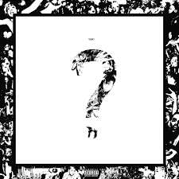
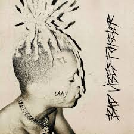

Album "17"
17 es el primer álbum de estudio del rapero estadounidense XXXTentacion. Fue lanzado el 25 de agosto de 2017 por Bad Vibes Forever e Empire Distribution. Con una duración total de 22 minutos
Album "?"
? es el segundo álbum de estudio del rapero estadounidense XXXTentacion y el último álbum de estudio que se lanzó antes de su muerte.
Album "Bad Vides Forever"
Bad Vibes Forever es el cuarto y último álbum de estudio del rapero estadounidense XXXTentacion. Fue lanzado el 6 de diciembre de 2019 a través de Bad Vibes Forever y Empire. Es su segundo álbum en solitario póstumo y su último álbum después de su muerte el 18 de junio de 2018.